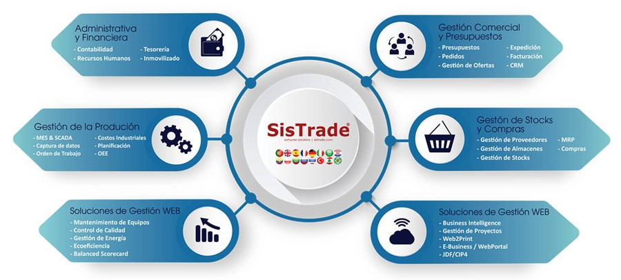

¿Qué es un Sistema de Gestión Empresarial?
Un Sistema de Gestión Empresarial (SGE) es una plataforma de software que integra y automatiza los procesos clave de una organización, como finanzas, recursos humanos, ventas, compras, inventario y producción. Su objetivo es centralizar la información, mejorar la eficiencia operativa y facilitar la toma de decisiones basada en datos.
- Permite la integración de diferentes áreas de la empresa.
- Automatiza tareas repetitivas y reduce errores humanos.
- Proporciona información en tiempo real para una mejor gestión.

Beneficios de un SGE:
- Aumento de la eficiencia: Automatización de procesos y optimización de recursos.
- Reducción de costos: Menos errores, menor tiempo de procesamiento y mayor productividad.
- Mejora de la toma de decisiones: Información en tiempo real y análisis de datos.
- Mayor satisfacción del cliente: Mejor servicio y mayor agilidad en la atención.
- Cumplimiento normativo: Facilita el seguimiento de las obligaciones legales.
Tipos de Sistemas de Gestión Empresarial
🏢
ERP
Enterprise Resource Planning
Gestión integral de todos los recursos y procesos de la empresa.
ERP
Enterprise Resource Planning
Gestión integral de todos los recursos y procesos de la empresa.
👥
CRM
Customer Relationship Management
Gestión de relaciones y procesos con clientes.
CRM
Customer Relationship Management
Gestión de relaciones y procesos con clientes.
📦
SCM
Supply Chain Management
Gestión de la cadena de suministro y logística.
SCM
Supply Chain Management
Gestión de la cadena de suministro y logística.
💼
HRM
Human Resource Management
Gestión de recursos humanos y nóminas.
HRM
Human Resource Management
Gestión de recursos humanos y nóminas.
Características principales de un SGE
- Integración de módulos y procesos en una sola plataforma.
- Base de datos centralizada y acceso seguro a la información.
- Automatización de tareas administrativas y operativas.
- Escalabilidad y adaptabilidad a diferentes tamaños de empresa.
- Generación de informes y análisis en tiempo real.
- Acceso multiusuario con roles y permisos personalizados.
- Interfaz intuitiva y facilidad de uso.
Ejemplos de Sistemas de Gestión Empresarial
- Odoo – ERP modular de código abierto, muy usado en pymes y grandes empresas.
- SAP ERP – Uno de los sistemas más potentes y extendidos en grandes corporaciones.
- Microsoft Dynamics 365 – Solución flexible y escalable de Microsoft para empresas de todos los tamaños.
- Oracle ERP Cloud – Plataforma en la nube para la gestión integral de empresas.
- Sage – ERP muy popular en gestión contable, financiera y de recursos humanos.
- Infor ERP – Solución especializada para sectores industriales y de servicios.